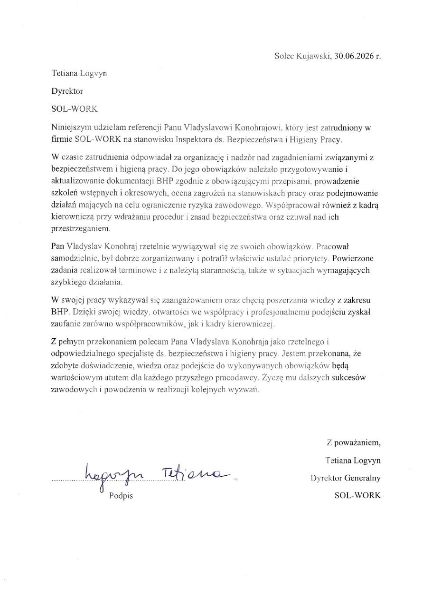

Vladyslav Konohrai
Rozumiem ludzi.
Nazywam się Vladyslav Konohrai. Jestem studentem psychologii UMK w Toruniu
i inspektorem BHP z doświadczeniem w pracy fizycznej, produkcji, gastronomii
oraz obsłudze klienta. Motywuje mnie nauka, odpowiedzialność i rozwój.
5+ lat doświadczenia
3 kierunki edukacji
5 języków
13 dyplomów i certyfikatów
MÓJ PUNKT DROGI
Droga, która mnie
ukształtowała
Każde doświadczenie było krokiem naprzód.
Od pracy fizycznej przez przemysł, aż do
psychologii i bezpieczeństwa pracy.
Dziś łączę wiedzę o człowieku z dbałością
o bezpieczeństwo i rozwój.
Poznaj moją historię
2019
Budownictwo
Pierwsze doświadczenie w pracy fizycznej i na budowie.
2020
Farma
Praca w gospodarstwie, opieka nad zwierzętami, dyscyplina.
2022
Przemysł
Lakierowanie, organizacja pracy i zarządzanie zespołem.
2024
Specjalista BHP
Odpowiedzialność za bezpieczeństwo, szkolenia i procedury.
2024+
Psychologia
Rozwój wiedzy o człowieku, motywacji i komunikacji.
Moje mocne strony
Organizacja
Praca pod presją
Obsługa klienta
Rozwiązywanie
Szybka nauka
Odpowiedzialność
Uprawnienia
Praca zespołowa
Zakres współpracy
Co wnoszę do zespołu
Łączę praktyczne doświadczenie z BHP, pracą operacyjną i psychologicznym spojrzeniem na ludzi.
Procedury i dokumentacja
Wsparcie w tworzeniu dokumentacji, analizie zagrożeń i porządkowaniu zasad pracy.
Komunikacja z zespołem
Spokojna praca z ludźmi, wyjaśnianie zasad i budowanie odpowiedzialności.
Organizacja stanowiska
Praktyczne spojrzenie na proces, ergonomię, jakość i codzienną efektywność.
Rozwój i nauka
Szybkie uczenie się, zbieranie informacji i przekładanie wiedzy na działanie.
Doświadczenie zawodowe
Kucharz
MANEKIN Sp. z o.o.
04.2026 – obecnie
Przygotowywanie dań zgodnie z recepturami i standardami jakości
Obróbka termiczna i smażenie mięsa
Przyrządzanie sałatek, burgerów i dań makaronowych
Przygotowywanie składników i półproduktów do bieżącej produkcji
Organizacja stanowiska pracy i współpraca z zespołem przy realizacji zamówień
Inspektor ds. BHP
SOL-WORK Tetiana Logvyn
10.2024 – obecnie
Opracowywanie dokumentacji BHP zgodnie z obowiązującymi przepisami
Prowadzenie szkoleń wstępnych i okresowych z zakresu BHP
Identyfikacja i analiza zagrożeń oraz proponowanie działań korygujących i zapobiegawczych
Współpraca z kierownictwem przy wdrażaniu procedur i kultury bezpieczeństwa
Monitorowanie przestrzegania przepisów i zasad BHP
Pomocnik lakiernika
Palfinger Poland Sp. z o.o.
06.2022 – 08.2024
Przygotowywanie maszyn i elementów do lakierowania
Samodzielne lakierowanie elementów oraz przygotowywanie i mieszanie farb
Śrutowanie elementów metalowych i obsługa obróbki powierzchni
Wykonywanie drobnych napraw oraz dbanie o stan techniczny sprzętu
Organizacja pracy działu i współpraca z magazynem przy realizacji projektów
Szkolenie nowych pracowników i wspieranie zespołu
Pracownik restauracji
Wojciech Szpila Sp. z o.o.
09.2023 – 12.2023
Pakowanie zamówień i obsługa klientów
Rozwiązywanie problemów klientów i wsparcie zespołu w trudnych sytuacjach
Utrzymywanie płynności pracy kuchni i kontrola zapasów
Obsługa urządzeń i reagowanie na awarie
Szkolenie nowych pracowników i wdrażanie ich do zespołu
Pracownik restauracji
Happy Food AWK Sp. z o.o.
08.2025 – 11.2025
Realizacja i pakowanie zamówień
Obsługa klientów, kasy i przyjmowanie płatności
Przygotowywanie produktów zgodnie ze standardami jakości
Zapewnianie ciągłości pracy kuchni
Kontrola i uzupełnianie zapasów
Pomocnik budowlany
Ukraina
04.2019 – 12.2019
Transport materiałów i przygotowywanie zapraw budowlanych
Montaż rusztowań oraz wsparcie przy budowie ścian
Wykonywanie prostych konstrukcji budowlanych na podstawie planów
Prace wykończeniowe: ocieplanie, malowanie i struktury dekoracyjne
Pracownik fizyczny na farmie
Ukraina
01.2020 – 04.2020
Wykonywanie prac polowych: sadzenie, pielęgnacja i zbiór plonów
Opieka nad zwierzętami i utrzymanie porządku w gospodarstwie
Edukacja
Psychologia Uniwersytet Mikołaja Kopernika w Toruniu
Asystent stomatologiczny Szkoła Policealna MEDICUS
Technik BHP Szkoła Policealna MEDICUS
Osiągnięcia i certyfikaty
Dyplomy i certyfikaty
Zobacz wszystkie dyplomy
Pełna galeria certyfikatów i zaświadczeń potwierdzających moje kwalifikacje.
Najbardziej prestiżowe
0
Pozostałe
0
Wyróżnione kwalifikacje
Najbardziej prestiżowe certyfikaty
Dokumenty wydane lub potwierdzone przez rozpoznawalne instytucje branżowe i akademickie.
Pozostałe kwalifikacje
Pozostałe certyfikaty
Kursy i szkolenia uzupełniające kompetencje zawodowe, cyfrowe oraz interpersonalne.
01 / 05
Wyróżniony
Pilot BSP A1/A3
Potwierdzenie zaliczenia szkolenia i zdania egzaminu.
Wystawca: EASA / Urząd Lotnictwa Cywilnego · Ważny do 20.09.2030
Referencje
Listy polecające
Rekomendacje od pracodawców i osób, z którymi współpracowałem.
01
Referencja MANEKIN
List polecający z restauracji MANEKIN, potwierdzający pracę kuchenną, organizację stanowiska i współpracę z zespołem.
Otwórz referencję
02
Referencja Palfinger Poland
List polecający za pracę jako pomocnik lakiernika w Palfinger Poland w latach 2022-2024.
Otwórz referencję

03
Referencja SOL-WORK
List polecający za pracę na stanowisku inspektora ds. bezpieczeństwa i higieny pracy w firmie SOL-WORK.
Otwórz referencję
“
Najważniejszy zasób każdej organizacji to ludzie.
VK
Wyrażam zgodę na przetwarzanie moich danych osobowych zawartych w CV na potrzeby obecnej oraz przyszłych rekrutacji, zgodnie z RODO.